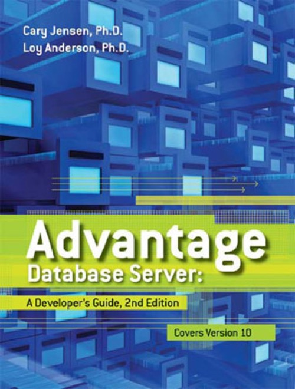

Advantage Database Server: A Developer's Guide - 2nd edition
Published by : Jensen Data Systems
Writed by : Cary Jensen, Loy Anderson
Published date : 18/08/2010
ISBN-10 : 1453769978
ISBN-13 : 9781453769973
Language :  English
English
Web site : http://www.jensendatasystems.com/ADSBook10/
About Advantage Database Server: A Developer's Guide - 2nd edition
This comprehensive developer's guide shows you how to use Advantage Database Server 10.0, the high-performance, low maintenance server that deploys on Windows, Linux, and Netware. Technically reviewed by the Advantage Database Server R&D team, this valuable resource will help you design and deploy reliable, scalable, low-maintenance, relational database applications.
Where to buy ?
This book has the ISBN13 "9781453769973".
If it is still available for sale, you can order it in your favorite bookstore, by its publisher or online at
Amazon CA,
Amazon FR,
Amazon JP,
Amazon UK or
Amazon USA depending on your country.
Table of content
Introduction
Part I Advantage and the Advantage Data Architect
Chapter 1 Introduction to Advantage Database Server
Chapter 2 Creating Tables
Chapter 3 Defining Indexes
Chapter 4 Understanding and Using Data Dictionaries
Chapter 5 Defining Constraints and Referential Integrity
Chapter 6 Working with Views
Chapter 7 Creating Stored Procedures
Chapter 8 Defining Triggers
Chapter 9 Using Notifications
Chapter 10 Backing Up and Restoring Data
Chapter 11 Implementing Replication
Part II Advantage SQL
Chapter 12 Introduction to Using Advantage SQL
Chapter 13 Advantage Query Tools
Chapter 14 Using SQL to Perform Common Database Operations
Chapter 15 The Advantage SQL Scripting Language
Chapter 16 System Management and Metadata
Appendix A Web Page for the Advantage 10 Book
Appendix B Troubleshooting and Other Issues
Index
Part III Accessing ADS Data
Part III chapters are available online
Chapter 17 Advantage and Delphi
Chapter 18 Advantage and ADO.NET
Chapter 19 Advantage and the .NET Entity Framework
Chapter 20 Advantage and Visual FoxPro
Chapter 21 Advantage Database Server and Java
Chapter 22 Advantage and MDAC, OLE DB, ADO, and Visual Basic
Chapter 23 Advantage with ODBC, PHP, and DBI/Perl